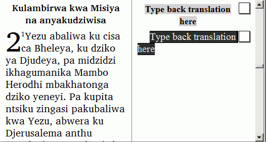

If a section of back translation is empty, you do not need to insert chapter and verse numbers.
Translation Editor can copy numbers from the vernacular to the back translation.
Click in a back translation of a Scripture paragraph (not an introduction paragraph).
